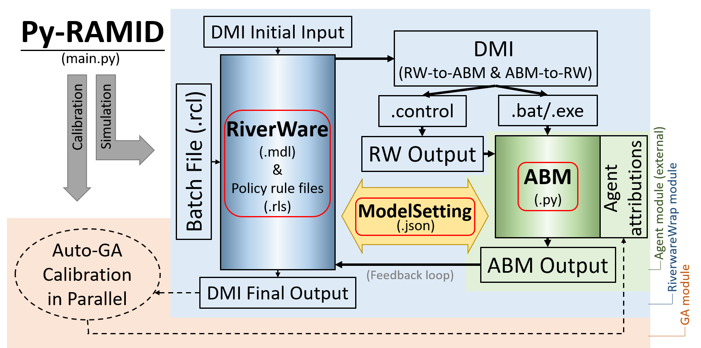

Py-RAMID User Manual¶
A Python package of a Riverware and Agent-based Modeling Interface for Developers.
Py-RAMID is a Python package of Riverware (RW, a river-reservoir routing model) and Agent-based Modeling (ABM, a human decision model) Interface for Developers, Py-RAMID, to address co-evolution challenges in a coupled natural-human system.
Py-RAMID is designed to work under Windows operating system.
